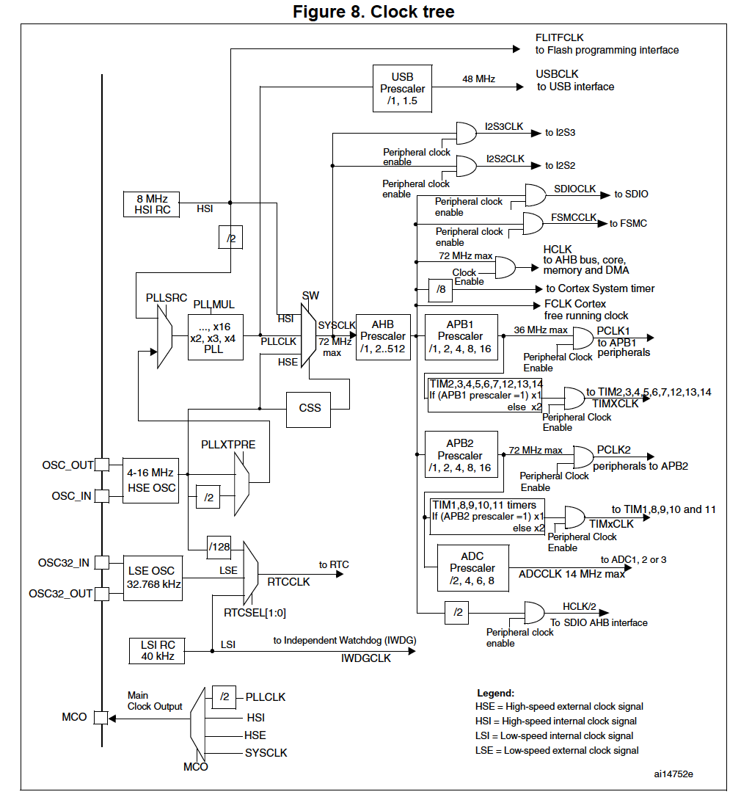

Introduction
The system clock of stm32F1 can reach 72MHz. Different from AVR microcontroller that changes clock source by using fuse bits, the stm32 clock source can be changed at runtime by modifying registers.
Created:2018-02-09 Last modified:2018-02-09
The system clock of stm32F1 can reach 72MHz. Different from AVR microcontroller that changes clock source by using fuse bits, the stm32 clock source can be changed at runtime by modifying registers.
The maximum input clock frequency to Sys is 72MHz
When using LSE, the RTC can continue to work without Vdd but using Vbat (voltage of the battery) Then the LSE is said in the backup domain.

When using HSE or HSE + PLL as system clock source, this feature can be used.
This component can be enabled by software to monitor the HSE. If HSE or HSE + PLL fails, it switch the clock source to HSI and the HSE or HSE + PLL is disabled and cause a NMI (Non maskable interrupt).
4 clock can be output 1). sysclk, 2). HSI, 3). HSE 4) PLL clock divided by 2
Clock: 8 MHz HSI without PLL, all APB peripherals disabled, only Flash and ROM is accessible.
Clock: No MCO, HSI directly used as system clock. (done by direct access register in C)
void SystemClock_Config(void)
{
RCC_OscInitTypeDef RCC_OscInitStruct;
RCC_ClkInitTypeDef RCC_ClkInitStruct;
/**Initializes the CPU, AHB and APB busses clocks
*/
RCC_OscInitStruct.OscillatorType = RCC_OSCILLATORTYPE_HSI;
RCC_OscInitStruct.HSIState = RCC_HSI_ON;
RCC_OscInitStruct.HSICalibrationValue = 16;
RCC_OscInitStruct.PLL.PLLState = RCC_PLL_NONE;
if (HAL_RCC_OscConfig(&RCC_OscInitStruct) != HAL_OK)
{
_Error_Handler(__FILE__, __LINE__);
}
/**Initializes the CPU, AHB and APB busses clocks
*/
RCC_ClkInitStruct.ClockType = RCC_CLOCKTYPE_HCLK|RCC_CLOCKTYPE_SYSCLK
|RCC_CLOCKTYPE_PCLK1|RCC_CLOCKTYPE_PCLK2;
RCC_ClkInitStruct.SYSCLKSource = RCC_SYSCLKSOURCE_HSI;
RCC_ClkInitStruct.AHBCLKDivider = RCC_SYSCLK_DIV1;
RCC_ClkInitStruct.APB1CLKDivider = RCC_HCLK_DIV1;
RCC_ClkInitStruct.APB2CLKDivider = RCC_HCLK_DIV1;
if (HAL_RCC_ClockConfig(&RCC_ClkInitStruct, FLASH_LATENCY_0) != HAL_OK)
{
_Error_Handler(__FILE__, __LINE__);
}
/**Configure the Systick interrupt time
*/
HAL_SYSTICK_Config(HAL_RCC_GetHCLKFreq()/1000);
/**Configure the Systick
*/
HAL_SYSTICK_CLKSourceConfig(SYSTICK_CLKSOURCE_HCLK);
/* SysTick_IRQn interrupt configuration */
HAL_NVIC_SetPriority(SysTick_IRQn, 0, 0);
}
/**
* @brief RCC Internal/External Oscillator (HSE, HSI, LSE and LSI) configuration structure definition
*/
typedef struct
{
uint32_t OscillatorType; /*!< The oscillators to be configured.
This parameter can be a value of @ref RCC_Oscillator_Type */
#if defined(STM32F105xC) || defined(STM32F107xC)
uint32_t Prediv1Source; /*!< The Prediv1 source value.
This parameter can be a value of @ref RCCEx_Prediv1_Source */
#endif /* STM32F105xC || STM32F107xC */
uint32_t HSEState; /*!< The new state of the HSE.
This parameter can be a value of @ref RCC_HSE_Config */
uint32_t HSEPredivValue; /*!< The Prediv1 factor value (named PREDIV1 or PLLXTPRE in RM)
This parameter can be a value of @ref RCCEx_Prediv1_Factor */
uint32_t LSEState; /*!< The new state of the LSE.
This parameter can be a value of @ref RCC_LSE_Config */
uint32_t HSIState; /*!< The new state of the HSI.
This parameter can be a value of @ref RCC_HSI_Config */
uint32_t HSICalibrationValue; /*!< The HSI calibration trimming value (default is RCC_HSICALIBRATION_DEFAULT).
This parameter must be a number between Min_Data = 0x00 and Max_Data = 0x1F */
uint32_t LSIState; /*!< The new state of the LSI.
This parameter can be a value of @ref RCC_LSI_Config */
RCC_PLLInitTypeDef PLL; /*!< PLL structure parameters */
#if defined(STM32F105xC) || defined(STM32F107xC)
RCC_PLL2InitTypeDef PLL2; /*!< PLL2 structure parameters */
#endif /* STM32F105xC || STM32F107xC */
} RCC_OscInitTypeDef;
/**
* @brief RCC PLL configuration structure definition
*/
typedef struct
{
uint32_t PLLState; /*!< PLLState: The new state of the PLL.
This parameter can be a value of @ref RCC_PLL_Config */
uint32_t PLLSource; /*!< PLLSource: PLL entry clock source.
This parameter must be a value of @ref RCC_PLL_Clock_Source */
uint32_t PLLMUL; /*!< PLLMUL: Multiplication factor for PLL VCO input clock
This parameter must be a value of @ref RCCEx_PLL_Multiplication_Factor */
} RCC_PLLInitTypeDef;